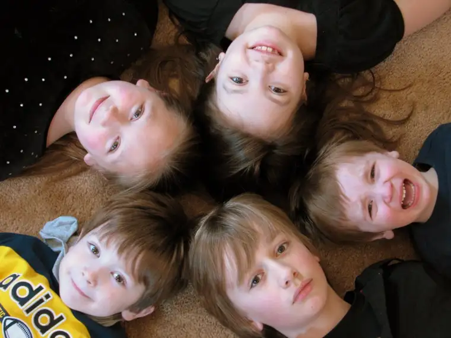
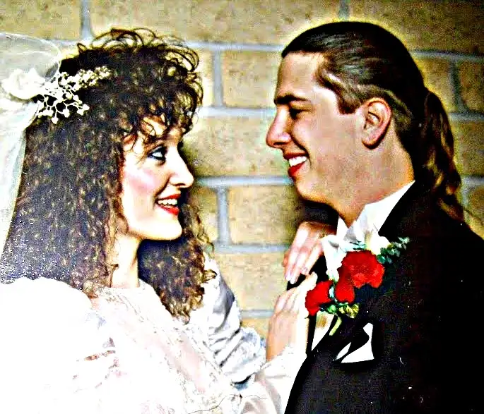
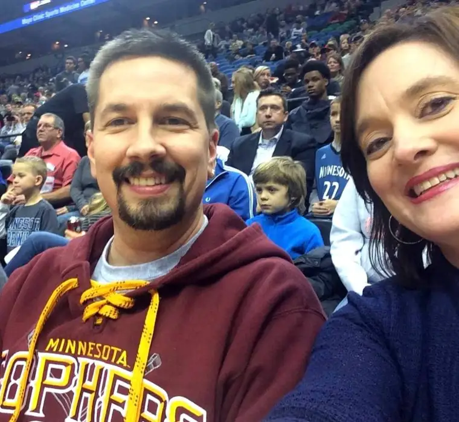

As much as many of us resist thinking of ourselves as protestors when we’re out on the sidewalk on Wednesdays, praying at our state’s lone abortion facility, on a certain level, we are protesting. What people get wrong most of the time when they use this word “protest” is what we are protesting.
Let’s start with what we’re not protesting. We’re not protesting the women. We’re not judging them for the situation that has brought them to the sidewalk. We’re not saying a thing about the state of their hearts. (We assume most come with conflicted hearts.) We’re not protesting the babies, who are wholly innocent. We’re not protesting the escorts’ right to stand there with us. We are not protesting anything good.
We are protesting the evil that is abortion. We are protesting our culture’s inability to come up with a better permanent solution to a temporary problem. We’re protesting death that has come before its time. We’re protesting what we see as a lack of mercy. We’re protesting the gruesome operation that takes place inside the facility masked as “choice.” We’re protesting the evil one’s hold on those who have come there convinced that they are helping women. Forced death helps no one. It simply ends life.
So now that I’ve gotten that out of the way, I think it’s important to state why I’m there. I wish I could hear from the escorts why they’re there. I wish they’d tell us the motivation behind their presence on Wednesdays. Not a mantra. Not a slogan. But the actual, real-life story of why they’ve committed to coming out there in the name of what they consider compassion. Maybe if we heard each others’ stories, it would bring us a little closer together.
Since the escorts are instructed not to talk to us, or so we’ve heard, we might never know, unless one of them decides to break free from that particular restriction. But we can still start the conversation, and hope in time, it can be a two-way discussion.
I can speak only for myself, but I will say that it wasn’t a case of one day waking up and thinking, “You know what I’d really love to do today? I would love to go make a nuisance of myself down at the abortion facility. That seems like a really fun way to spend an hour or two.” In actuality, I dreaded it. I dragged my feet. I came up with all kinds of excuses of why I shouldn’t be there. And then one day, the invitations of a friend who felt called to pray there became one too many, and the tugs on my conscience, too weighty.
But the reason behind the reason I go there, which I find when I search the depths of my own heart, is this:

This picture was taken a few years back, but it’s one of my favorite of our handful. Having experienced six pregnancies, including several unplanned by me (but not by God), and one that ended in miscarriage, my mother’s heart lurched when I began to really contemplate what takes place downtown Fargo each Wednesday; that other young women right here in my city were being denied the chance to experience the beautiful gift of bringing a child into the world as I had been able to do five times.
These women, because of a society that would not support them, would not be there for them in their time of need, would not walk with them through a difficult time, would be denied one of life’s most incredible journeys: the self-sacrificial, life-giving, creative experience of becoming a mother of a living child. And the fathers of those babies? All I heard was this: Who cares about them? What do they have to do with this whole thing anyway, right? “My body my choice; stay out of it men.” It didn’t make any sense to me, knowing how those children of mine came into the world. I guarantee, I didn’t act alone. And those kids still need their father every bit as much as they need me.
I began to see, because of the profound, life-changing, soul-satiating gift I’d been given in motherhood, how very wrong abortion is. How very delusional. How very tragic. No woman, if promised a sure circle of support, would say no to this incredible privilege.
Even knowing of many other ways I could live out my pro-life convictions — and I follow through on a variety of them — something about being there in person, showing up, standing in the gap, being a living witness to life, seemed right. And so I reordered my life slightly in order to follow through. Not to just speak my convictions, not to just write about them, but to live them.
That’s why I pray downtown, and to me, it is one of the best ways I can spend an hour on Wednesdays. But certain Wednesdays, the whole scenario feels particularly troubling, due simply to mere timing. This week, for instance, we are heading into what is for many one of the most blessed and holy times of the year. But instead of thinking about preparations for the upcoming holiday season, today, these women are helping plan the deaths of their children. And every Thanksgiving hereafter, they will be reminded in some way of this irreversible act, and for many, it will become a deep sorrow.
I wish the abortion appointments would stop at times when people should be celebrating with family, but they don’t. Even as I type, I’m deliberating over whether I should go today. While I take my commitment to sidewalk advocacy seriously, my vocation as mother and wife goes before it. And this week, along with being the launch of the 2015-16 holiday season, it is also my 25th wedding anniversary — today actually.
 
I’ll been praying, too, for the escorts. For one in particular. God knows which one. I am praying that one of those who arrives feeling she or he is doing a good will see the truth, change their commitment to the Red River Women’s Clinic, and cross over to the side of life. (The organization, And Then There Were None, can help.) Someday, I would love for that person to stand with us, in love and in hope.
I am grateful today for my friends who pray with me on the sidewalk, and for those who pray but cannot be there in person. I am grateful for all of God’s blessings, and the love I have been given that compels me to love in turn. I am grateful for 25 years of marriage to a guy I met at age 18 (30 years ago) and who, against many odds, has walked with me in this life and drawn closer to God with me in our sufferings, and most days still makes me laugh and laugh hard — like the time he made me “spit” milk out of my nose in the dining hall during one of our first college “dates.”
Finally, Lord, thank you for life itself. Without it, we have nothing. You are a good, good Father. All praise and glory to you, almighty God, from whom all blessings flow.
Q4U: For what are you thankful this day?